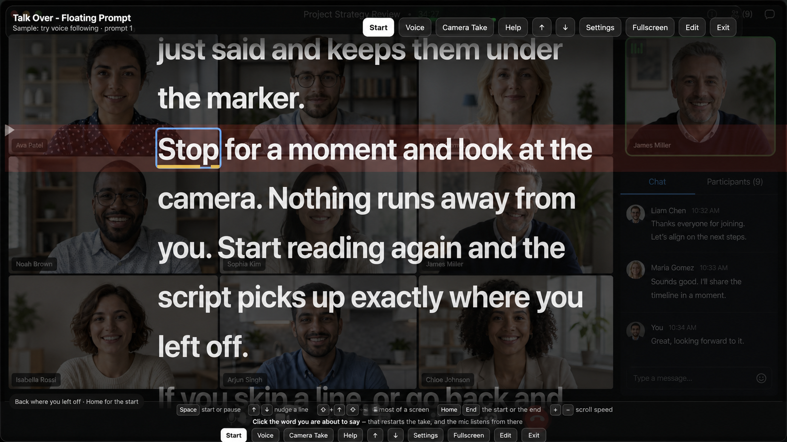

The script follows your voice
Talk Over listens while you talk and moves the script to keep pace with you. There is no timer to guess at and no speed dial to keep nudging: start speaking and the words come to you, pause to think and the prompt waits, go off-script for a moment and it picks you back up when you return to the page. Speech recognition runs entirely on your own Mac - the audio never leaves the machine, there is no account, and it works with the Wi-Fi off.

Floating Prompt
Talk Over floats your script on top of whatever you're already doing. It's a transparent, always-on-top window you can drag anywhere and size to fit - park it right under your webcam so your eyes stay where they belong, and leave Zoom, Meet, Teams, Keynote or your browser fully usable underneath. A shade slider sets how see-through the window is, from a barely-there tint to a near-solid backdrop, so your words stay readable over a bright slide or a busy call. Share the meeting app's window rather than your whole screen and the prompt stays yours alone.

Record yourself, while you read
Camera Take turns Talk Over into a self-recording setup: your camera picture sits behind the words, so you can read a script while still looking into the lens. It is made for tutorial videos, screencasts with a talking-head introduction, product demos, training materials, company documentation, and any update you need to deliver clearly without losing your place. Choose your camera and recording microphone, then use the three-second countdown to get ready. Talk Over writes the take straight to your Mac as you record. The script, controls, and settings are never burned into the video, so the final file is simply you on camera. You can also flip the prompt horizontally, vertically, or both for a beam-splitter teleprompter rig.

Read it your way
Three ways to move through a script, and you can switch between them mid-take: let your voice drive it, run a steady timed crawl, or work it by hand. The reading keys are printed along the bottom of the presenter so there's nothing to memorise - space to start and pause, arrows to nudge a line, Page Up and Page Down to move most of a screen, plus and minus to change the crawl speed. Text size, column width, line height, paragraph spacing and the height of the read line are all yours to set.

Bring your script in, keep it exactly as written
Paste your text or drop in a .txt, .md, .markdown or .rtf file. Talk Over keeps what you gave it word for word, and prepares a separate reading copy that quietly drops the parts you were never meant to say out loud - review notes, headings and bracketed stage directions. You read clean prose; your original is untouched underneath.

Nothing you write is ever thrown away
Every save is a new numbered version, and Talk Over never removes one. Earlier drafts stay listed beside the script: open one to read it without disturbing anything, or bring it back - which adds it as the newest version rather than deleting the work that came after it. There is no way to lose a line to a save.
It remembers where you were
Leave the presenter to fix a typo, come back, and Talk Over puts you on the same line. It holds your place per script, and it holds the words either side of that line too - so even an edit that shifts the text around still finds the spot you were reading.
Yours, on your own Mac
Talk Over is a single Mac app with a small menu-bar icon and no cloud behind it. Your scripts, your voice and your recordings stay in your own folder on your own machine, and everything works with no connection at all. Replace the app and your library is exactly where you left it.